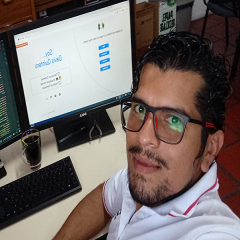

Curriculum

Hola, tengo un alto nivel en el desarrollo de actividades productivas relacionadas con el ensamblaje, mantenimiento, actualización, instalación y configuración de equipos de cómputo; manejo de Software Ofimático y Herramientas Tics.
Desde el 2014 tengo experiencia en el Desarrollo Web como Freelance, orientado a la Arquitectura Frontend; maquetación y optimización para el buen posicionamiento y rendimiento de sitios Web e Interfaces de Usuario.
Las tecnologias que manejo son:
Experiencia
-
Diseño y Actualización; Framework para la maquetación de sitios web responsive con CSS-Flexbox y CSS-Grid. Contiene las carpetas que conforman un proyecto, el archivo index.html, los archivos dav-style.css de la maquetación y un archivo index.js con los codigos de un menu responsive.
davStyle (Desde el 2014)
-
Auxiliar de Gestión Técnologica; solución de problemas informaticos al área administrativa y educativa.
FESC (Actual)
-
Lider de Proyectos; diseño y ejecucion de proyectos de CCTV y Cableado Estructurado.
NETSERVICE (2015 - 2022)
-
Auxiliar de Sistemas; solución de problemas informaticos al área administrativa y adminitración del aula tecnologica del convenio Telefonica.
CORPRODINCO (2013 - 2014)
-
Auxiliar de Sistemas; solución de problemas informaticos al área administrativa, backup de servidores y chequeo de CCTV.
Pasteurizadora La Mejor (2012 - 2013)